REMISION INVOL
Desplegamos itinerario y verificamos cambios en el historial
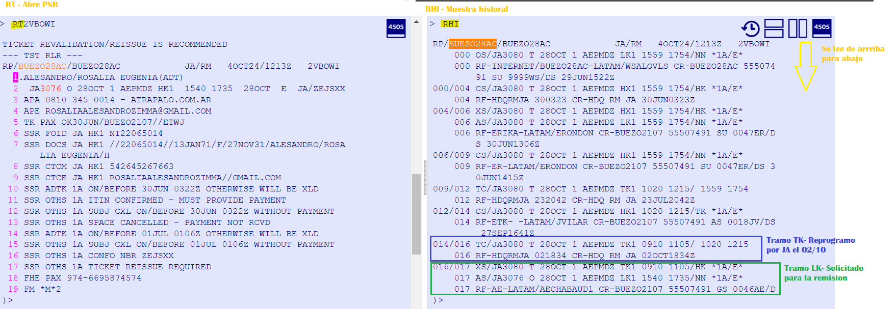
Desplegamos ticket original
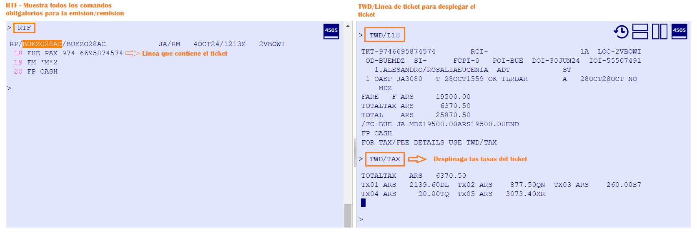
Debido a que es un invol, no hay archivo tarifario creado. Vamos a crear la mascara manual
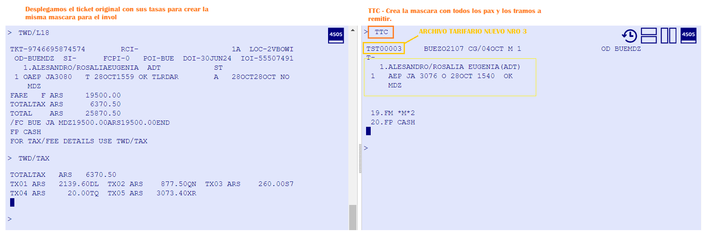
Vamos a cargar todos los componentes de la mascara
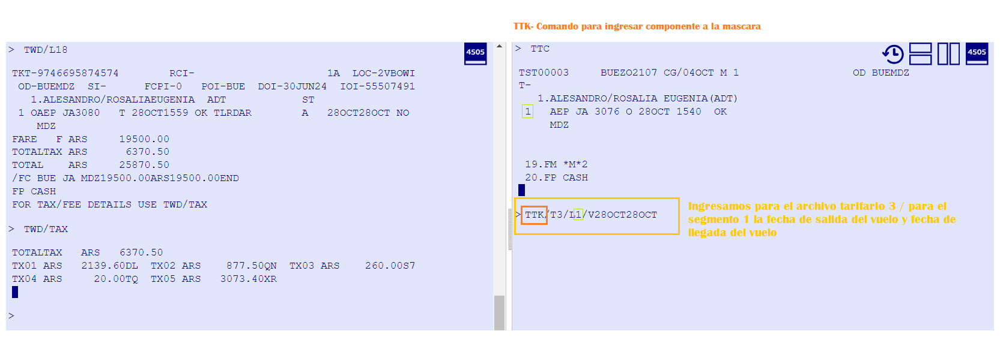
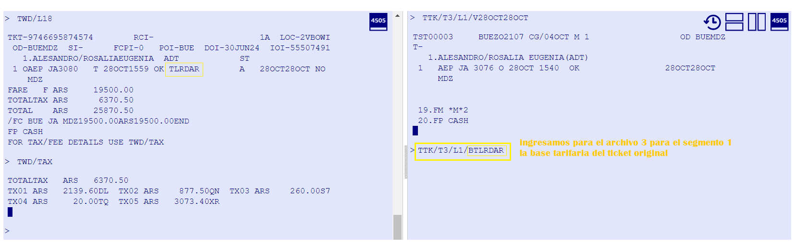
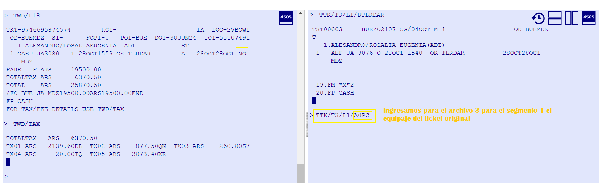
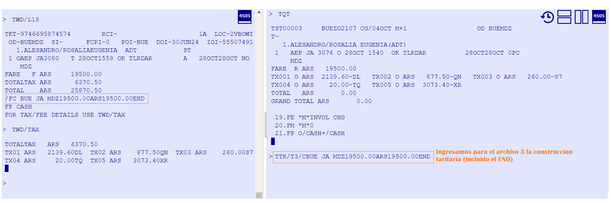
A diferencia de Galileo, aca debemos ingresar las tasas originales e indicarle a Amadeus que ya estan pagas
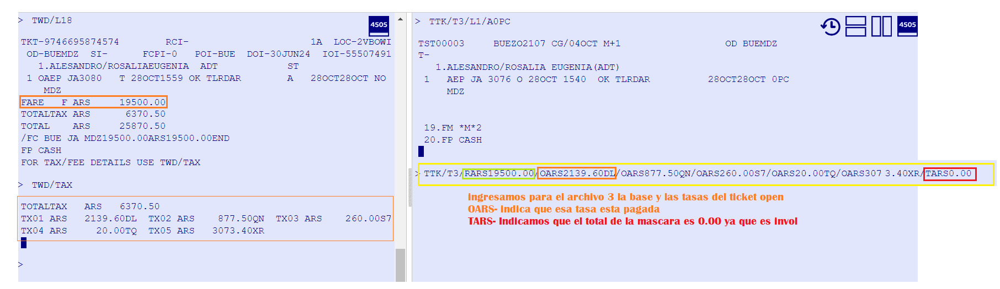
Una vez cargados los componentes firmamos y cerramos
Ahora cargamos los comandos necesarios para la remision
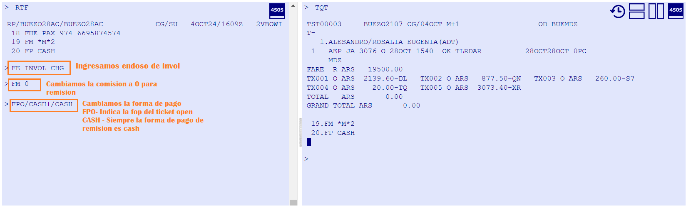
Debemos indicar cual es el ticket que vamos a usar para la remision
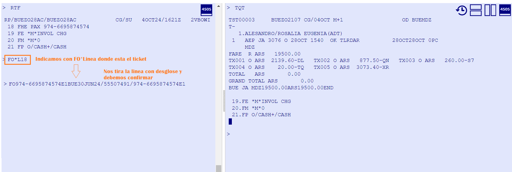
Verificamos carga de datos y remitimos
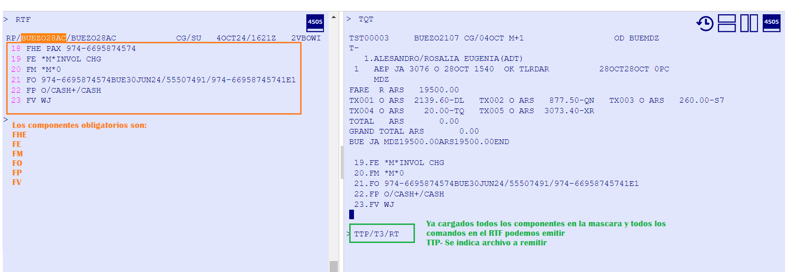